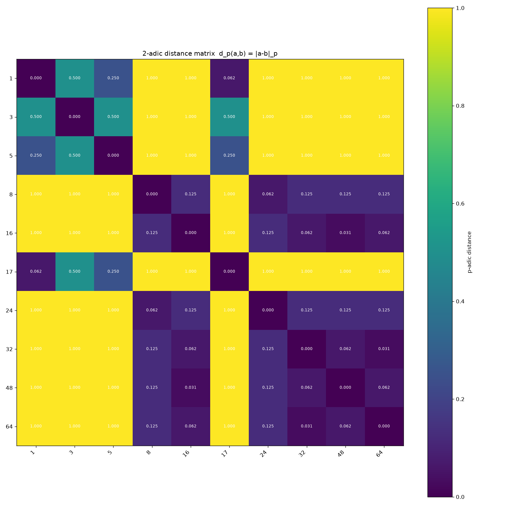

The p-adic Metric, as an Embedding Geometry
An embedding space whose geometry is governed by the p-adic metric instead of the usual Euclidean one — ultrametric balls, exact arithmetic, and exhaustive triangle-inequality verification.

The idea
Machine learning embeddings almost always use Euclidean distance. But there are other metrics — and the p-adic metric is one of the most alien: two numbers are “close” if they share a large power of p as a factor, regardless of how numerically far apart they appear on the number line. It is an ultrametric: every triangle is isosceles, and the strong triangle inequality d(a, c) ≤ max(d(a, b), d(b, c)) holds everywhere.
This package implements the p-adic valuation and metric exactly using
fractions.Fraction, verifies the ultrametric property exhaustively over
720 ordered triples (zero violations), and demonstrates hierarchical clustering
by p-adic residue classes.
What is the p-adic metric?
Fix a prime number p. The p-adic valuation vₚ(x) counts how many times p divides an integer x — it is the exponent of the highest power of p that is a factor. So v₂(48) = 4 because 48 = 2⁴ · 3, and v₂(3) = 0 because 3 is odd. For a fraction a/b the valuation is vₚ(a) − vₚ(b), which lets the idea extend from the integers to all of the rationals.
From the valuation you build the p-adic absolute value: |x|ₚ = p⁻⁽ᵀᵣ⁾ₓ⁾ (with |0|ₚ = 0), and the p-adic distance dₚ(a, b) = |a − b|ₚ. The counter-intuitive move is the minus sign: a large power of p dividing the difference makes the absolute value small. Two numbers are p-adically close exactly when their difference is highly divisible by p — a purely arithmetic notion of nearness that ignores position on the number line. Under p = 2, the numbers 1 and 17 are close (d₂ = 1/16) because 17 − 1 = 16 = 2⁴, even though 1 and 2 — numerically adjacent — are p-adically far apart.
What makes this a genuinely different geometry is the ultrametric, or strong triangle inequality: |x + y|ₚ ≤ max(|x|ₚ, |y|ₚ). This is stronger than the ordinary triangle inequality (which only bounds the sum). It forces two properties that Euclidean space never has: every triangle is isosceles (the two longest sides are equal), and any two balls are either fully nested or completely disjoint — they can never partly overlap. That nesting is why the p-adic world is naturally a tree rather than a line, and why residue classes mod p𝑘 fall into a clean hierarchy. Metrics obeying the strong triangle inequality are called non-Archimedean; the p-adic numbers ℚₚ are the canonical example, completing the rationals with respect to |·|ₚ instead of the ordinary absolute value that gives the reals.
How this project demonstrates it
The package treats the p-adic metric as the geometry of an embedding space, in place of the Euclidean distance that machine-learning embeddings almost always assume. Three design choices keep it honest and reproducible:
- Exact arithmetic. Every valuation, absolute value, and distance is computed
with
fractions.Fraction, so results like 1/16 are exact — there is no floating-point rounding to blur a strict inequality. - Exhaustive verification. The strong triangle inequality is checked over all 720 ordered triples drawn from the demo set, with zero violations — a concrete, machine-checked confirmation that the space really is an ultrametric.
- Hierarchical clustering. Because residue classes mod p𝑘 form balls of radius p⁻𝑘 that nest perfectly as k grows, the metric induces a canonical tree over any dataset. Items sharing large powers of p cluster together regardless of numeric size.
Strings are embedded deterministically via SHA-256(item) mod 2²⁰, so the demo is
reproducible across machines (unlike Python’s salted built-in hash()).
Honest caveat: the p-adic metric here is entirely real mathematics, not a fictional analogy. What is exploratory is the application — using p-adic geometry as an embedding space is an illustration of how an alternative metric reshapes clustering, not a claim that it outperforms Euclidean embeddings on any downstream task.
p-adic metric questions
What is the p-adic metric?
For a fixed prime p, the p-adic valuation vₚ(x) is the exponent of the highest power of p dividing x. The p-adic absolute value is |x|ₚ = p⁻⁽ᵀᵣ⁾ₓ⁾, and the p-adic distance between a and b is |a − b|ₚ. Two numbers are “close” when their difference is divisible by a high power of p, regardless of how far apart they sit on the number line.
What is the ultrametric (strong triangle) inequality?
The p-adic absolute value satisfies |x + y|ₚ ≤ max(|x|ₚ, |y|ₚ), which is stronger than the ordinary triangle inequality. Two consequences: every triangle is isosceles, and any two balls are either nested or disjoint — never partially overlapping — so the space has a natural tree structure.
Why use the p-adic metric as an embedding geometry?
Euclidean embeddings measure closeness as numeric proximity; p-adic closeness is arithmetic — shared divisibility by p. That produces canonical hierarchical clustering by residue classes mod p𝑘, which this project demonstrates using exact Fraction arithmetic and exhaustive ultrametric verification over 720 ordered triples.
The mathematics
p-adic valuation: v_p(n) = largest k such that p^k | n
p-adic absolute value: |x|_p = p^(-v_p(x))
p-adic distance: d_p(a, b) = |a - b|_p
All distances computed as fractions.Fraction (exact, no float rounding)
Ultrametric (strong triangle inequality):
d(a, c) ≤ max(d(a, b), d(b, c))
Verified exhaustively: 720 ordered triples, 0 violations
Demo items: [1, 3, 5, 8, 16, 17, 24, 32, 48, 64] under p = 2
d_2(1, 17) = 1/16 = 0.0625
because 17 - 1 = 16 = 2^4 → v_2(16) = 4 → |16|_2 = 1/16
String embedding: SHA-256(item) mod 2^20
(deterministic, unlike Python's hash())
Hierarchical clustering under the p-adic metric naturally produces nested balls: residue classes mod p𝑘 form balls of radius p⁻𝑘, perfectly nested as k increases. This gives a canonical tree structure over any p-adic dataset.
Figures & animations
p-adic distance matrix (p=2)
Pairwise p-adic distances for items [1, 3, 5, 8, 16, 17, 24, 32, 48, 64]. Items sharing large powers of 2 appear close (dark) regardless of numeric proximity.
Run it
git clone https://github.com/caelum0x/awesome-mad-projects.git cd padic-embeddings pip install -e . python -m padic_embeddings # demo with p=2 python -m padic_embeddings --p 3 # demo with p=3 python -m pytest tests/ -v